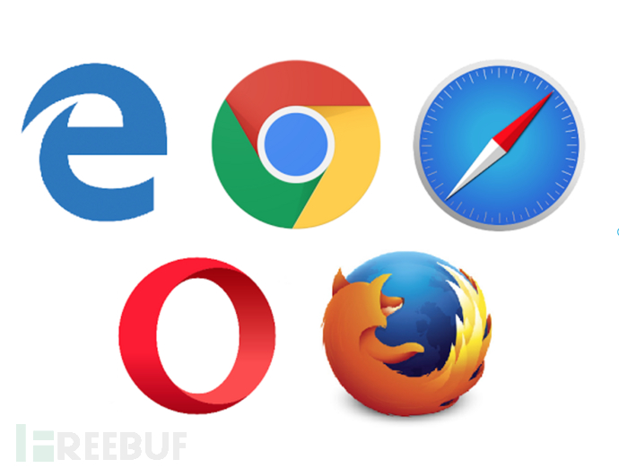
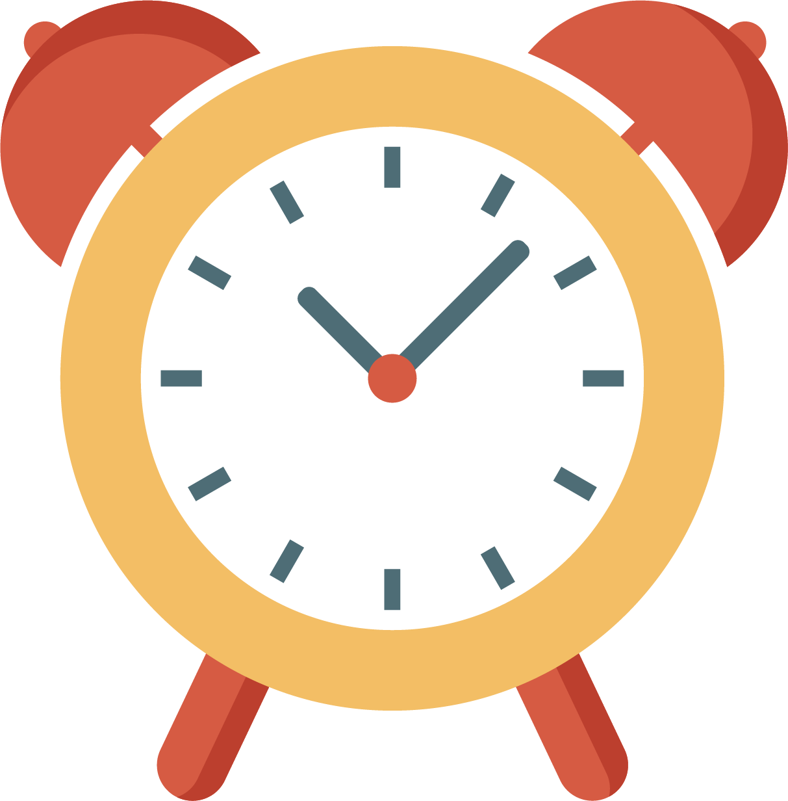

What actually is the Event Loop?
while (true) {
task = taskQueue.pop();
execute(task );
}
What's a task?
What's a task queue?
How do tasks

task
<script >
const foo = bar();
foo.doSomething();
document.body.addEventListener('keydone', (event) => {
if(event.key === 'PageDown') {
location.href = '/#/36';
}
})
</script >
task queue

while (true) {
task = taskQueue.pop();
execute(task );
}
More complicated in actual
taskQueue
rendering pipeline
while (true) {
task = taskQueue.pop();
execute(task );
if (isRepaintTie()) repaint();
}
running very long task
function() veryLongTask () {
firstPartOfTask();
setTimeout(restOfTheTask);
}
More complicated in actual
an Event loop has one or more taskqueues
queue can be excuted in any order
task in the same queue must be excuted in the order they arrived
task from the same source must go in the same queue
running very long task
while(true) {
queue = getNextQueue();
task = queue.pop();
excute(task );
if (isRepaintTie()) repaint();
}
More complicated in actual
microtasks ------> promise
special properties
microtask runs after every task
if you hava multile tasks in the microtask queue, they are all going run
task queue
let number = 0;
function start() {
document.getElementById('promise').innerHtml = number++;
setTimeout(start);
}
microtask queue
let number = 0;
function start() {
Promise.resolve().then(addTen);
}
function addTen() {
document.getElementById('promise').innerHtml = number++;
Promise.resolve().then(addTen);
}
event Loop
while(true) {
queue = getNextQueue();
task = queue.pop();
excute(task );
while(microtaskQueue.hasTasks()) {
doMicroTask();
}
if (isRepaintTie()) repaint();
}
More complicated in actual
animation frame callback queue
microtask queue
requestAnimationFrame(() => {
this.browser.classList.remove('slide')
requestAnimationFrame(() => {
this.browser.classList.add('slide')
})
})
special properties of animation frame callback
animation queue will run all the task in a Loop
new added task will not be running
microtask queue
while(true) {
queue = getNextQueue();
task = queue.pop();
excute(task );
while(microtaskQueue.hasTasks()) {
doMicroTask();
}
if (isRepaintTime()) {
animationTasks = animationQueue.copyTask();
for (task in animationTasks)
doAnimationTask(task)
repaint();
}
}
node
no script parsing events
no task user interactions
no animation frame callback
no rendering pipeline
browser
event loop is going all the time
node
check if there are more task to do, if not, stop
the node event loop
one queue for all of your event callback
one check queue
one queue for all of your timers for callback and set interval
order of running
run every thing in the event callback
run every thing in the check queue
run everything in the time queue
add stuff to the check phase
task queue
setTimeout(callback, 0)
setImmediate(callback)
microtask queue of node
promise task queue
nextTick queue
node event Loop
while(tasksAreWaiting()) {
queue = getNextQueue();
while(queue.hasTasks()) {
task = queue.pop();
execute(tesk);
while(nextTickQueue.hasTasks()) {
doNextTickTask();
}
while(promiseTickQueue.hasTasks()) {
doPromiseTask();
}
}
}